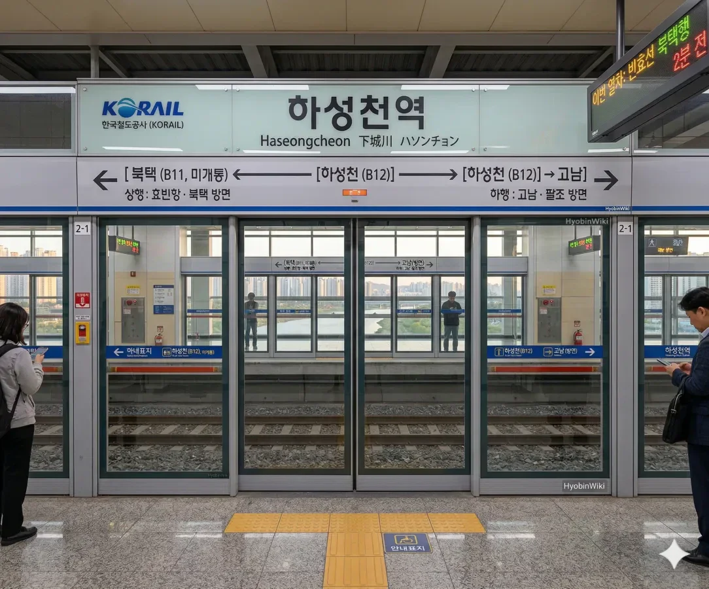

- 1. 개요
- 2. 역 정보
- 3. 역 주변 정보
- 3.1. 출구 정보
- 3.2. 주요 시설 (아파트/학교/우체국)
- 4. 일평균 이용객
- 5. 승강장
- 5.1. 빈효선 (지상 3층)
- 5.2. 창전선 (지상 2층, 예정)
- 6. 연계 교통
- 7. 기타 (원문 보존)
- 8. 여담 (하성천역 7대 전설)
1. 개요
빈효선 광역전철 B12번 및 미개통 노선인 창전선 C14번(예정). 효빈광역시 동구 덕현동 634 소재에 위치한 역이다.
현재는 빈효선 광역전철만 운행 중이나, 향후 창전선 1단계 구간(팔조~하성천)이 개통되면 환승역이 될 예정이다. 창전선은 하성천역을 시종착역으로 하여 우선 개통될 계획이다.
2. 역 정보
효빈광역시 동구 덕현동 일대를 담당하는 역이다. 역명은 역 인근을 흐르는 지방 하천인 하성천에서 따왔다.
창전선 1단계 구간의 종착역으로 계획되어 있다. 1단계 구간 개통 시 창전구와 청엽구에서 넘어오는 승객들이 빈효선으로 환승하여 효빈항이나 타 지역으로 이동하는 주요 환승 거점이 될 것으로 보인다. 차후 2단계 구간(하성천~시청)이 착공되면 중간역으로 전환될 예정이다.
3. 역 주변 정보
3.1. 출구 정보

 하성천역 출구 정보
하성천역 출구 정보
|
||
|---|---|---|
| 번호 | 주요 시설 및 방향 | 비고 |
| 1 |
덕현7동행정복지센터, 효빈덕현7동우편취급국 덕현주공 6단지 (동구 덕현7동), 덕현에 아파트 (동구 덕현7동) 신곡초등학교, 원내초등학교, 산언초등학교 |
행정/우편 및 덕현7동 주거지 |
| 2 |
창전선 하성천역사 (공사중), 하성천 수변공원 덕현주공 4단지 (동구 덕현11동) |
창전선 환승 및 수변공원 |
3.2. 주요 시설 (아파트/학교/우체국)
역을 중심으로 덕현동의 거대한 주거 단지가 둘로 나뉘어 있다. 1번 출구 방면은 행정동상 덕현7동 구역으로 덕현주공 6단지와 이름이 독특한 덕현에 아파트가 자리 잡고 있다. 이쪽에는 행정복지센터와 택배 핫플레이스인 효빈덕현7동우편취급국, 그리고 무려 3개의 초등학교(신곡, 원내, 산언)가 밀집해 있다.
반면, 하성천 물길을 건너는 2번 출구 방면은 덕현11동에 속하며, 덕현주공 4단지와 하성천 수변공원이 넓게 펼쳐져 있어 주거와 휴식이 결합된 조용한 분위기를 띤다. 현재 2번 출구 앞쪽으로는 창전선 고가 역사 공사가 한창 진행 중이다.
4. 일평균 이용객
주거 지역 배후 수요 덕분에 이용객은 꾸준한 편이다. 매년 소폭 상승 중이며 2024년에는 일평균 5,000명 돌파를 눈앞에 두고 있다. 향후 창전선 개통 시 환승 수요가 더해져 이용객이 급증할 것으로 예상된다.
5. 승강장
5.1. 빈효선 (지상 3층)

| 덕현중앙 (미개통) ↑ | ||||
| 하 | ㅣ | ㅣ | 상 | |
| ↓ 북택 | ||||
| 상 |
빈효선 광역전철
|
효빈항 방면 |
| 하 |
빈효선 광역전철
|
약산 · 궁하 · 천주 · 고남 방면 |
5.2. 창전선 (지상 2층, 개통 예정)
| 우 택 (예정) ↑ | ||||
| 하 | ㅣ | ㅣ | 상 | |
| 시종착역 (2단계 미개통) | ||||
| 상 |
창전선
|
팔조 · 신창전 · 우택 방면 |
| 하 |
창전선
|
당역 종착 |
6. 연계 교통
기존 버스 노선 외에 창전선 공사와 함께 역사 주변 도로 정비가 진행 중이다.
7. 기타
-
동구의 숨겨진 산책로:
빈효선 광역전철 구간 중 가장 경치가 좋은 곳 중 하나로 꼽힌다. 역에서 내리자마자 하성천 산책로가 연결되어 있어, 퇴근길에 잠시 내려 하천 바람을 쐬고 가는 주민들이 많다. -
미래의 환승 거점 (창전선):
현재는 이용객 수가 평범한 수준이지만, **창전선** 1단계 구간(팔조~하성천)의 시종착역으로 확정되면서 지역 내 기대감이 매우 높다. 창전선이 개통되면 창전구, 청엽구 지역에서 넘어오는 승객들이 빈효선으로 환승해 도심이나 외곽으로 이동하는 핵심 관문 역할을 수행할 것으로 보인다. -
사라진 역번호의 진실 (B11번):
빈효선 하성천역의 역번호는 **B12번**인데, 전 역인 전덕역은 **B10번**이다. 중간의 **B11번**이 비어있는 이유는 두 역 사이에 건설 중인 **덕현중앙역(B11)**이 아직 개통되지 않았기 때문이다. 덕현중앙역은 2029년 2월 2일 5호선과 동시 개통될 예정이며, 현재 빈효선 열차는 해당 구간을 무정차 통과한다.
8. 여담 (하성천역 7대 전설)
8.1. 덕현주공 6단지와 4단지의 기묘한 경계선
하성천역을 기준으로 1번 출구 앞은 덕현주공 6단지(덕현7동)가, 2번 출구 건너편은 덕현주공 4단지(덕현11동)가 자리 잡고 있다. 물리적 거리는 코앞이지만 하성천 물길과 역사가 단지를 갈라놓고 있어 두 아파트 주민들 사이에는 미묘한 경계선이 존재한다.
특히 어린 학생들 사이에서는 "우리 동네 주공아파트가 더 크고 역에서 가깝다"며 유치한 자존심 대결이 벌어지곤 한다. 실제로 하성천에 놓인 징검다리를 건너 상대방 구역(?)에 있는 떡볶이집으로 원정을 가는 것이 초등학생들의 주요 일과다. 과거에는 두 단지를 오가려면 하천 다리를 빙 돌아가야 했으나, 하성천역이 개통되며 역 구내 연결 통로가 사실상의 육교 역할을 하게 되어 주민 교류가 훨씬 활발해졌다.
8.2. 효빈덕현7동우편취급국의 '오타쿠 굿즈' 특화 배송망
1번 출구 인근에 있는 자그마한 효빈덕현7동우편취급국은 규모에 맞지 않게 엄청난 취급량을 자랑한다. 하성천역이 빈효선과 창전선(예정)의 환승 거점이라는 지리적 이점 덕분에, 타지에서 효빈에 놀러 온 서브컬처 팬들이 무거운 굿즈(네소베리 인형, 아크릴 스탠드, 피규어 등)를 잔뜩 사 들고 와서 고향으로 택배를 부치기 때문이다.
우편취급국 국장님은 피규어 박스 모서리가 구겨지면 고객들이 세상을 잃은 듯 오열한다는 사실을 일찌감치 깨닫고, 아예 창구 한편에 '오타쿠 굿즈 전용 3중 에어캡 포장 데스크'를 신설해 버렸다. 심지어 우체국 옆 과일가게 할머니들은 빈 택배 박스를 구하러 다니는 덕후들을 위해 매일 아침 단단하고 깨끗한 사과 박스를 차곡차곡 접어놓고 천 원에 파는 창조 경제를 실천 중이시다.
8.3. 하성천 수변공원의 야생 생태계: 러닝 크루 vs 코스어
2번 출구 바로 앞에 조성된 하성천 수변공원은 평일 저녁엔 파워워킹을 하는 아줌마들과 땀내 나는 러닝 크루들의 훌륭한 조깅 코스다. 하지만 주말 오후가 되면 이 평화로운 생태계에 이질적인 존재들이 난입한다. 바로 형형색색의 가발을 쓰고 소품을 든 코스프레어(코스어)들이다.
수변공원의 갈대밭과 조명 켜진 다리 밑이 스냅 사진을 찍기 완벽한 장소로 소문나면서, 주말마다 덕후들이 진을 치고 촬영을 진행한다. 처음엔 조깅을 하던 러닝 크루들이 화들짝 놀라 길을 비켜주곤 했으나, 이제는 아예 서로 융화되어 코스어들이 러닝 크루에게 "화이팅!"을 외쳐주고 러닝 크루 아저씨들이 "아이고 이 더운데 그 두꺼운 옷 입고 고생이 많네!"라며 이온 음료를 건네주는 기묘한 공생 관계가 형성되었다.
8.4. '덕현에 아파트', 그 이름이 불러온 대참사
1번 출구 방면에 있는 아파트 단지의 공식 명칭은 '덕현에 아파트'다. 90년대 후반에 "자연 '에' 산다"는 느낌을 주기 위해 야심 차게 지은 순우리말 브랜드였으나, 실생활에서는 엄청난 언어적 혼란을 야기했다.
택배 기사가 "어디 사세요?" 물으면 "덕현에요."라고 대답하게 되고, 기사님이 다시 "아니 덕현동 어디 아파트시냐고요?"라고 화를 내면 "아니 진짜 '덕현에' 아파트라고요!"라며 억울하게 해명해야 하는 대참사가 매일 벌어진다. 심지어 외지 친구들을 초대할 때 "하성천역 내려서 덕현에로 와"라고 하면 친구들이 덕현역으로 잘못 찾아가는 바람에 절교 위기에 처한 주민들이 한둘이 아니다. 결국 부녀회에서 아파트 외벽에 '덕현에 아파트 맞습니다'라는 웃지 못할 현수막을 걸어놓기도 했다.
8.5. 창전선 1단계 시종착역의 축복과 지독한 공사 소음
현재 2번 출구 앞은 창전선 1단계 구간의 시종착 역사 공사로 인해 거대한 펜스가 쳐져 있다. 하성천역 주민들은 창전선이 개통되면 환승 허브로서 집값이 오를 것이란 부푼 꿈(축복)을 안고 있지만, 당장의 지독한 항타기 소음과 덤프트럭 먼지 때문에 고통받고 있다.
이 불만을 잠재우기 위해 효빈교통공사 측은 공사장 펜스 전체를 창전선 마스코트 심세이의 초대형 일러스트 가림막으로 덮어버렸다. 가림막에는 "미안하다 덕현동! 2033년엔 내가 책임지고 편하게 모시마!"라는 대사가 큼지막하게 적혀 있다. 매일 공사장을 지나는 주민들은 "그때면 내 나이가 환갑이다 이놈아!"라며 펜스를 향해 삿대질을 하는 것이 하성천역의 씁쓸한 아침 유머 코드로 자리 잡았다.
8.6. 신곡·원내·산언초등학교의 '하성천 삼국지'
1번 출구 인근은 신곡초등학교, 원내초등학교, 산언초등학교라는 무려 3개의 초등학교가 반경 500m 이내에 밀집해 있는 엄청난 초품아(초등학교를 품은 아파트) 구역이다. 덕분에 하교 시간이 되면 수천 명의 초등학생들이 한꺼번에 쏟아져 나와 하성천역 일대가 노란색 가방으로 뒤덮인다.
이 세 학교 학생들은 역 앞의 대형 문방구와 컵떡볶이집을 두고 치열한 영토 분쟁(?)을 벌인다. 특히 하성천역 지하 대합실의 유일한 슬러시 자판기 앞은 세 학교 학생들의 만남의 광장이자 배틀그라운드다. 각 학교마다 교복 체육복 색깔이 달라서, 멀리서 보면 3개 국가의 군대가 대치하는 삼국지 축소판 같다고 하여 동네 어르신들은 이를 '하성천 삼국지'라 부르며 흐뭇하게 지켜보신다.
8.7. B11(덕현중앙) 패싱이 만든 하성천역의 '묘한 우월감'
하성천역 주민들의 가장 큰 자부심 중 하나는 빈효선 노선도에서 나오는 기묘한 번호 배열이다. 전 역인 전덕역은 B10번, 하성천역은 B12번이다. 중간에 이빨이 빠진 B11번(덕현중앙역)은 공사 지연으로 인해 현재 빈효선 열차가 서지 않고 무정차 패싱(통과)하고 있다.
이 때문에 하성천역 주변 덕현7동·11동 주민들은, 아직 기차가 서지도 않는 덕현동 한복판(덕현중앙) 주민들에게 "우리는 이미 광역전철 타고 부산까지 다이렉트로 가는데, 너희는 언제 개통하냐?"라며 묘한 우월감을 뽐낸다. 명목상 덕현동의 중심은 B11번 덕현중앙역 일대지만, 실질적인 철도 교통의 혜택을 먼저 꿀 빨고(?) 있는 승자는 바로 이곳 B12번 하성천역 주민들이기 때문이다.